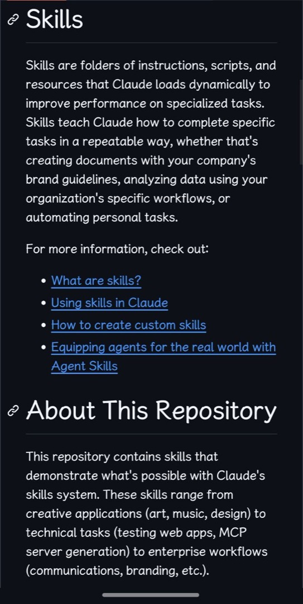
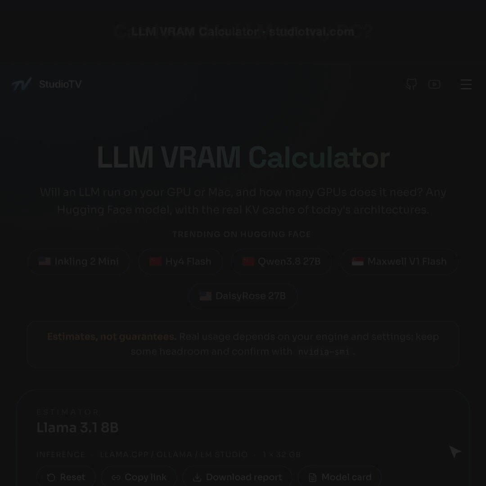

本期速览
01 Gemini官方蒸馏服务上线
02 本体工程提炼企业隐性规则
03 Claude用真实数据搭建美国文明地图
04 Anthropic开源Skills体系
06 Telos-Live-1支持全双工交互
01｜Gemini官方蒸馏服务上线
来源（X） · @chlovelyn · 2026-11-26 18:24
前阵子俩死对头还在拼命防蒸馏，Anthropic 甚至直接把防盗能力焊进模型底层、天天盯着中文区乱封号防“偷师”；结果谷歌反手推出官方「Gemini 蒸馏服务」明着让你拿顶级教师模型的输出和推理模式，合法炼出一个低延迟、超便宜的生产级小模型。
别人防贼防到走火入魔，谷歌直接把金库大门焊开按斤发教程。我严重怀疑谷歌根本不想靠 API 赚小钱，这是摆明了要拿官方外挂把 OpenAI 和 Claude 的高价订阅彻底熬死。
@grok 别装死，谷歌都持证开蒸馏批发店了，你们三家今晚还睡得着吗？
02｜本体工程提炼企业隐性规则
来源（X） · @SeanchenZ · 2026-11-26 11:38
最近在处理一个工业现场的跨部门协作问题时，我对 Ontology Engineering 又有了一层新的理解。
抽象一下这个业务场景：
A 单位提出业务需求；
B 单位负责方案规划；
C 单位负责工程实施；
D 单位负责相关设备及系统的技术保障。
需求沿着组织链路逐级传递，最终变成了 D 单位的一项执行任务。
但问题在于，任务传递过来了，必要的业务上下文却没有同步传递。
为什么必须执行？
是否存在成本更低的替代方案？
需要调动哪些资源？
会影响哪些关联资产？
谁承担额外的工程成本？
什么条件下才允许执行？
经过相关方重新讨论，原本直接执行的任务，变成了一个需要根据前置条件和实际必要性重新判断的决策问题。
这件事让我意识到，企业内部存在至少两套运行逻辑：
一套是写在 SOP、组织架构和制度文件里的显性规则。
另一套是实际业务运行中，由资源约束、利益分配、责任边界、专业判断和跨部门协商共同形成的隐性规则（Tacit Rules）。
后者往往更难获取，却可能直接影响工程交付的效率。
从 Ontology Engineering 的角度，我尝试将这类业务抽象为六个维度：
Object：业务对象与资源资产
Relationship：组织关系与资产依赖
State：业务当前所处的状态
Constraint：资源、安全与技术约束
Authority：决策权限与责任边界
Action：满足条件后允许执行的动作
进一步提炼出几条值得验证的业务规则：
① 需求提出不等于执行授权。
② 责任分配需要与资源配置相匹配。
③ 对单一资产的变更，需要评估其关联资产的影响。
④ 满足业务目标的前提下，应优先选择全局成本更低的方案。
⑤ 当执行条件不完整时，任务应进入协调或审批状态，而非直接进入执行状态。
这些规则不应该因为某一次协商成功就被认定为普遍规律，而需要通过更多真实案例持续验证。
这也是我最近在思考的 Agentic Flywheel：
真实业务事件
→ 发现隐性规则
→ Ontology 建模
→ 定义决策与执行约束
→ 验证业务结果
→ 修正规则与本体
→ 下一轮业务改善
如果企业每次遇到类似问题，都需要依靠资深员工的经验、临时会议和反复沟通才能解决，那么这些尚未被结构化的组织知识，本身就是值得研究的工程资产。
FDE 的价值，或许不仅在于把 AI 部署到企业内部，更在于发现那些尚未被数字化、标准化和显性化的业务逻辑。
在构建 Agent 之前，首先要理解企业实际上是如何运行的，而不仅仅是它在制度文件上应该如何运行。
#FDE #OntologyEngineering #AgenticEngineering #IndustrialAI
03｜Claude用真实数据搭建美国文明地图
来源（X） · @bozhou_ai · 2026-11-26 11:29
他让 Claude 用美国的真实公开数据，从头搭了一张类似《文明》的游戏地图。用 Claude Code 桌面应用配 Opus 5.5，开着中等强度和ultracode，跑了 7 个小时、写了 4.5 万行代码，现在已经跑通上线，直接能点开玩了。
整个项目的底子全是真数据。Claude 自己下载并解析了 31
个真实数据源，包括美国人口普查局、经济分析局、劳工统计局、能源信息署、国防部、国家公园管理局、联邦航空管理局、CDC这些机构的数据。真实的海拔、土地覆盖、GDP、就业、发电厂、矿山、港口、机场、军事基地、大学、货运流量和灾害数据，全被统一塞进了一
张 25 公里的六边形网格里。
这些数据还全部被翻译成了《文明》的玩法语言。
金币产量对应的就是真实GDP。每座城市的城区跟着当地的产业走，圣何塞建了一座学院，底特律则是汽车城。地图里的市民也是当地真实的劳动力，圣何塞每 4名劳动者里就有 1 名是工程师、程序员或科学家，全美平均是每 14 人才有 1名。游戏里的奇观按公开规则评选，比如国家公园按游客数量排名，大学按研发支出排名。
页面里的功能也搭得很全。支持 19 种视角切换，可以看收入、学历、信仰、灾害这些维度，涵盖 524 个都会区的城市视图，还配了 9位顾问和一个探索器。用这个探索器，能把全美 3,100 多个县里任意一个县的任意一列数据转成表格和散点图，而且和地图联动。
连发推文配的预告片，都是 Claude 顺手做出来的。
网站已经部署在 http://karpathy.ai/usaciv/ 了，点页面里的问号能找到全部数据来源链接，感兴趣可以直接进去逛一逛。
04｜Anthropic开源Skills体系
来源（X） · @Phoenix21ovo · 2026-11-26 23:57
Anthropic 开源 anthropics/skills——Claude 背后的技能（Skills）体系完整范本：
✅ 19 个示例技能，从入门到进阶完整覆盖
✅ 规范外置设计：能力定义与实现分离，清晰可复制
✅ 生产级实现参考：docx / pdf / pptx 等文档技能直接可用
✅ 教你写出自己的 Skill——如何描述、如何组织、如何让模型稳定调用为什么重要：Prompt 是一次性对话，Skill 是可复用资产。
当“会写 Skill”成为岗位技能，这套官方规范就是标准教材。
https://github.com/anthropics/skills

05｜HarmonyOS设备突破1亿
来源（X） · @Huawei · 2026-11-25 15:51
中文译文
余先生，华为常务董事、消费者业务集团董事会主席，回顾了 HarmonyOS 设备数量突破 1 亿背后的共同历程，以及前方令人兴奋的可能性。
原文
Mr. Yu, Huawei Executive Director and Chairman of the Board of Directors of the Consumer Business Group, reflects on the shared journey behind HarmonyOS surpassing 100 million devices and the exciting possibilities that lie ahead.
06｜Telos-Live-1支持全双工交互
来源（X） · @Telos_lab · 2026-11-25 02:17
中文译文
介绍 Telos-Live-1，我们的首个全模态、全双工模型。
它可以同时看到、听到并与你交谈，并在搜索、使用工具或操作电脑时保持对话继续进行。
完整技术博客：https://teloslab.com/research/introducing-telos-live-1
原文
Introducing Telos-Live-1, our first omni-modal, full-duplex model.
It can see, hear and talk with you at the same time, and keep the conversation going while it searches, uses tools or operates computers.
Full Tech blog: https://teloslab.com/research/introducing-telos-live-1
07｜LLM本地运行可行性查询工具
来源（X） · @YTStudioTV · 2026-11-23 21:11
中文译文
“我能在自己的 PC 上运行这个 LLM 吗？”这个问题每天会被问上千次。
我构建了真正能回答它的工具。
选择你的 GPU 或 Mac 以及一个模型：能或不能，以 tokens/s 计的真实速度，要下载的最佳量化版本，运行它所需的确切命令。
免费，无需注册。
原文
"Can I run this LLM on my PC?" gets asked a thousand times a day.
I built the tool that actually answers it.
Pick your GPU or Mac and a model: yes or no, real speed in tokens/s, the best quant to download, the exact command to run it.
Free, no sign-up.
